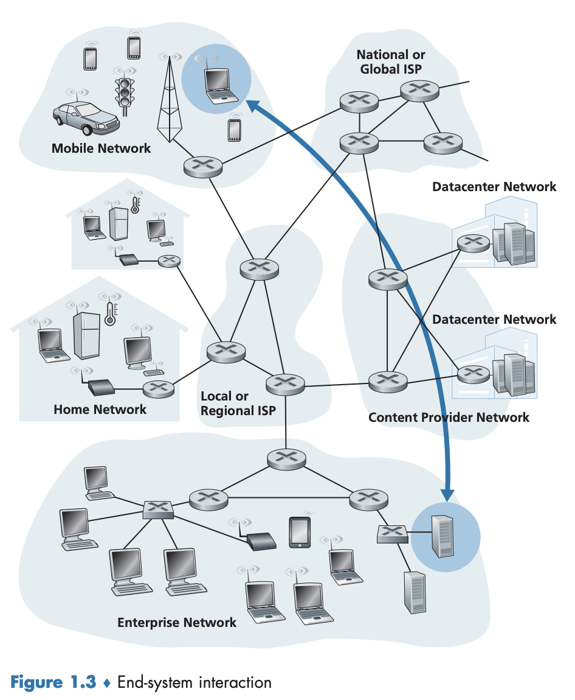
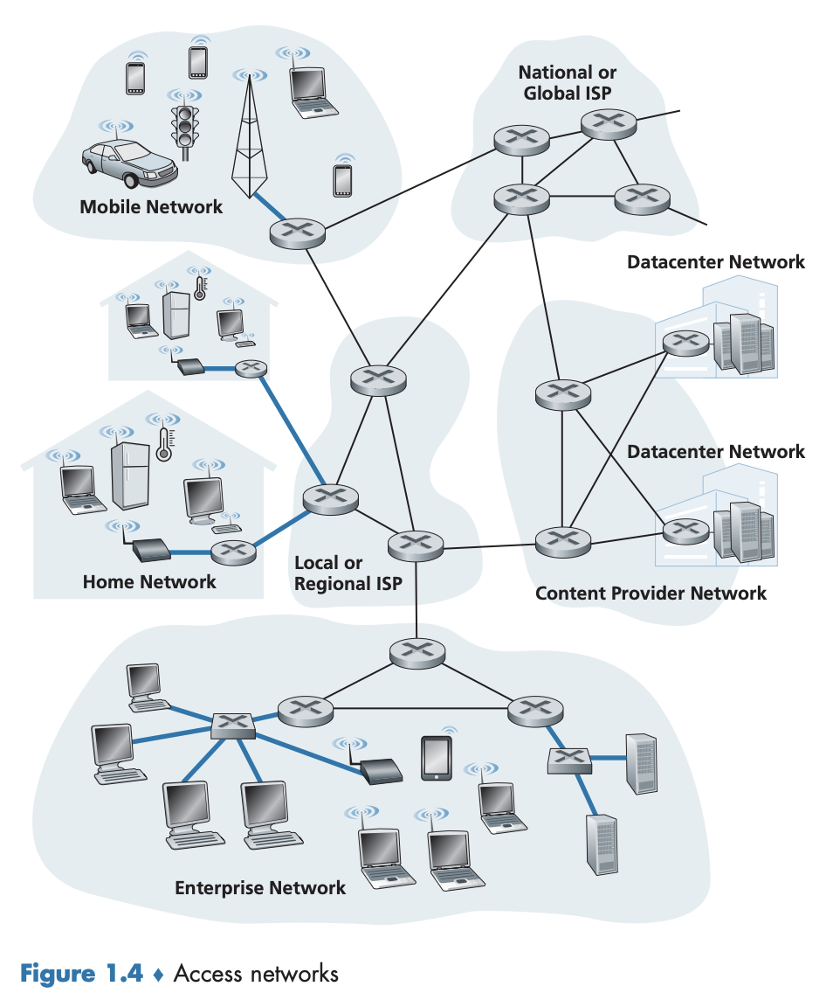
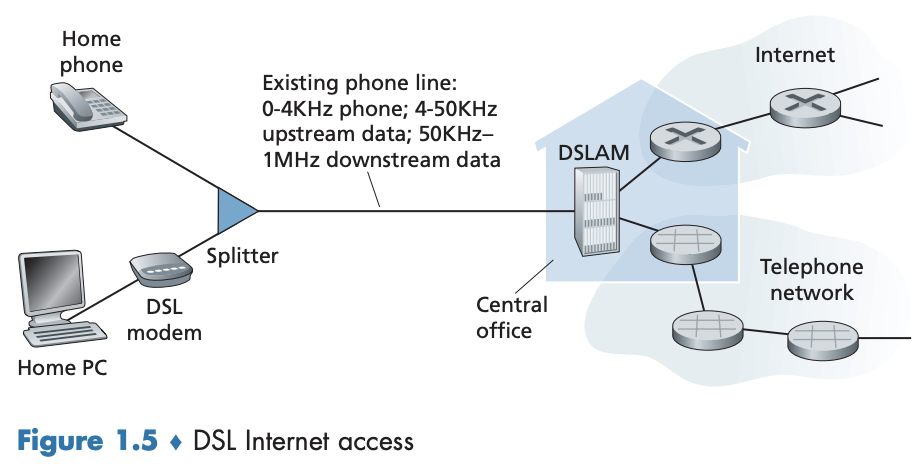
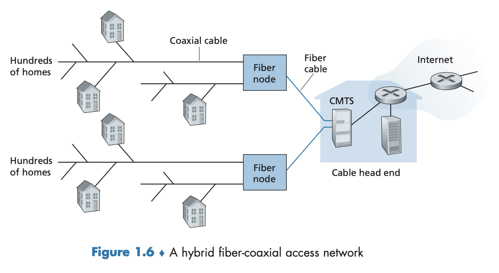
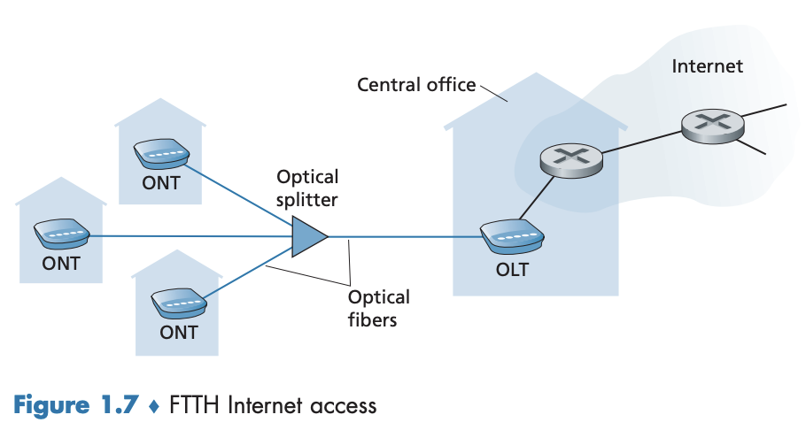
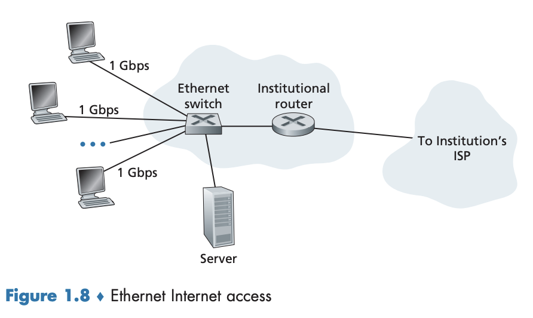
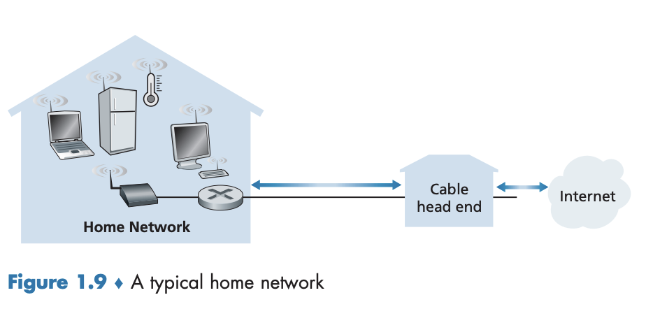

1.2 네트워크의 가장자리
이 절에서는 컴퓨터 네트워크(특히 인터넷)의 구성요소를 더 자세히 살펴보고 매일 사용하는 컴퓨터와 스마트폰 같은 장치를 다룬다.
호스트(host), 종단 시스템(end system)
- 인터넷에 연결되는 컴퓨터와 그 밖의 장치들
- 그림 1.3에서처럼 인터넷의 가장자리를 차지하고 있기 때문에 종단 시스템이라고 한다.
- 종단 시스템은 애플리케이션을 수행하므로
호스트(host)라고도 부르며, 때때로 클라이언트(client) 와 서버(server) 로 구분된다. - 비공식적으로 클라이언트는 데스크톱, 이동 PC, 스마트폰 등을 의미하며 서버는 더 강력한 기능을 갖춘 컴퓨터라고 이해하면 된다.
- 오늘날 많은 서버는 커다란 데이터 센터(data center) 내에 있다.

1.2.1 접속 네트워크
접속 네트워크
- 종단 시스템으로부터 먼 거리에 있는 다른 종단 시스템까지의 경로상에 있는 첫 번째 라우터(가장자리 라우터(edge router))에 연결하는 네트워크
- 그림 1.4는 굵은 선으로 여러 종류의 접속 네트워크와 이들이 사용되는 환경을 나타내고 있다.

가정 접속
- 가정 접속 네트워크의 이용률은 매우 높다(2020년 기준 유럽과 미국 가정의 80% 이상).
- 가장 널리 보급된 광대역 가정 접속 유형은 DSL(Digital Subscriber Line) 과 케이블이다.
DSL(Digital Subscriber Line)
- 일반적으로 가정은 유선 로컬 전화 서비스를 제공하는 같은 지역 전화 회사(telco)로부터 DSL 인터넷 접속 서비스를 받는다. → DSL을 사용할 때 고객의 텔코(telco)가 ISP도 된다.
- 그림 1.5와 같이 각 고객의 DSL 모뎀은 텔코의 지역 중앙국(central office, CO)에 위치한 DSLAM(digital subscriber line access multiplexer)과 데이터를 교환하기 위해 기존 전화 회선을 이용한다.
- 가정의 DSL 모뎀은 디지털 데이터를 받아서 전화선을 통해 CO로 전송하기 위해 고주파 신호로 변환된다.
- 여러 가정으로부터의 아날로그 신호는 DSLAM에서 디지털 포맷으로 다시 변환된다.

- 가정 전화 회선은 데이터와 전통적인 전화 신호를 동시에 전달하며 이들은 다른 주파수 대역에서 인코딩된다.
- 고속 다운스트림 채널: 50 kHz~1 MHz 대역
- 중간 속도의 업스트림 채널: 4~50 kHz 대역
- 일반적인 양방향 전화 채널: 0~4 kHz 대역
- 이 방식(주파수 분할 다중화)은 단일 DSL 링크가 3개의 분리된 링크인 것처럼 보이게 하여 하나의 전화 회선과 인터넷 연결이 동시에 DSL 링크를 공유할 수 있게 한다.
스플리터(splitter)
- 고객(가정) 쪽에 존재한다.
- 가정에 도착하는 데이터와 전화 신호를 분리하고 데이터 신호를 DSL 모뎀으로 전송한다.
DSLAM(digital Subscriber line access multiplexer)
- 텔코 쪽의 CO에 존재한다.
- 데이터와 전화 신호를 분리하고 데이터를 인터넷으로 송수신한다.
- 수백 혹은 수천 개의 가정들이 하나의 DSLAM에 연결된다.
DSL 표준
- DSL 표준은 여러 전송률을 정의하며, 업스트림과 다운스트림을 포함한다.
- 업스트림 속도: 3.5 Mbps, 16 Mbps
- 다운스트림 속도: 24 Mbps, 52 Mbps
- 최신 표준은 업스트림과 다운스트림을 결합한 1Gbps 속도를 정의하고 있다.
- 다운스트림과 업스트림 속도가 다르기 때문에 이 접속 방식을 비대칭(asymmetric)이라고 한다.
- 실제 속도는 위에 기술된 속도보다 작을 수 있다.
- DSL 제공자가 계층(tiered) 서비스를 제공하는 경우 가정의 전송률을 의도적으로 제한할 수 있다.
- 최대 전송률이 가정과 CO 간의 거리, 꼬임쌍선의 규격(gauge), 전기적 간섭의 정도에 따라 제한될 수 있기 때문이다. → 가정과 CO 간의 거리가 8~16km 내에 있어야 한다.
케이블 인터넷 접속(cable Internet access)
- 케이블 TV 회사와 기존 케이블 TV 인프라스트럭처를 이용한다.
- 가정은 케이블 TV 서비스를 제공하는 같은 회사로부터 인터넷 접속 서비스를 받는다.
- 그림 1.6과 같이, 광케이블은 케이블 헤드엔드(head end)를 이웃 레벨 정션(junction)에 연결하며 이로부터 개별 가정과 아파트에 도달하는 데 전통적인 동축케이블이 사용된다.

-
각 이웃 정션은 보통 500~5,000 가정을 지원한다.
-
광케이블과 동축케이블 모두 이 시스템에서 채택하고 있기 때문에 흔히 HFC(hybrid fiber coax)라고 부른다.
-
케이블 인터넷의 한 가지 중요한 특성은 공유 방송 매체라는 것이다.
- 특히 헤드엔드가 보낸 모든 패킷이 모든 링크의 다운스트림 패널을 통해 모든 가정으로 전달된다.
- 가정에서 보낸 모든 패킷은 업스트림 채널을 통해 헤드엔드로 전달한다.
- 다음과 같은 상황이 발생할 수 있다.
- 여러 사용자가 다운스트림 채널에서 다른 비디오 파일을 동시에 수신하고 있다면 각 사용자가 비디오 파일을 수신하는 실제 수신율은 다운스트림 전송률보다 상당히 작아진다.
- 단지 몇 명만 접속하고 그들 모두가 웹을 탐색 중이라면 각 사용자는 전체 다운스트림 전송률로 웹 페이지를 수신할 수도 있다. → 사용자가 동시에 웹 페이지를 요구하는 경우는 많지 않기 때문
- 업스트림 채널도 공유되므로 분산 다중 접속 프로토콜은 전송을 조정하고 충돌을 피하기 위해 필요하다.
케이블 모뎀
- 케이블 인터넷 접속에서 필요한 모뎀
- HFC 네트워크를 2개의 채널, 다운스트림과 업스트림 채널로 나눈다.
- DSL 모뎀과 유사한 점이 있다.
- 보통 외장형 장치이고 이더넷 포트를 통해 가정 PC에 연결된다.
- 접속은 비대칭이며 보통 다운스트림이 업스트림 채널보다 빠른 전송률이 할당된다.
- 낮은 전송 속도 계약 혹은 미디어 손실로 인해 최대 가능 속도가 실현되지 않을 수도 있다.
- DOCSIS 2.0과 DOCSIS 3.0 표준은 다운스트림 속도를 최대 40Mbps와 1,2Gbps 그리고 업스트림 속도를 최대 30Mbps와 100Mbps로 정의하고 있다.
CMTS(Cable Modem Termination System)
- DSL 네트워크의 DSLAM과 유사한 기능을 제공한다.
- 많은 다운스트림 가정에 있는 케이블 모뎀으로부터 송신된 아날로그 신호를 다시 디지털 포맷으로 변환
FTTH(Fiber To The Home)
- DSL과 케이블 네트워크보다 더 빠른 속도를 제공하는 미래 기술
- CO로 부터 가정까지 직접 광섬유 경로를 제공한다.
- 잠재적으로 Gbps의 인터넷 접속 속도를 제공할 수 있다.
- 광신호를 분배하는 여러 경쟁적인 기술들이 존재한다.
- 다이렉트 광섬유(direct fiber)
- AON, PON
다이렉트 광섬유(direct fiber)
- 가장 간단한 광신호 분배 네트워크
- 각 가정으로 CO에서 하나의 광섬유를 제공한다.
AON(Active Optical Network), PON(Passive Optical Network)
- 스플리팅을 수행하는 두 가지 경쟁적인 광신호 분배 네트워크 구조
- 스플리팅(splitting): 일반적으로 CO에서 시작되는 각 광섬유는 실질적으로 여러 가정이 공유하는데, 가정에 가까운 곳까지 하나의 광섬유로 온 다음 고객별 광섬유로 분리해주는 것
-
AON: 근본적으로 교환(switched) 이더넷
-
PON: 버라이즌(Verizon)의 FiOS 서비스에서 이용되는 구조. 그림 1.7이 PON 분배 구조를 이용하는 FTTH를 보여준다.
- 각 가정은 ONT(Optical Network Terminator)를 갖고 있으며 이는 지정된 광섬유로 이웃 스플리터에 연결된다.
- 스플리터는 여러 가정(보통 100 가정보다 작음)을 하나의 공유 광섬유로 결합하고 이를 텔코의 CO에 있는 OLT(Optical Line Terminator)에 연결한다.
- 광신호와 전기신호 간의 변환을 제공하는 OLT는 텔코 라우터를 통해 인터넷에 연결한다.
→ 가정에서 사용자는 홈 라우터(일반적으로 무선 라우터)를 ONT에 연결하고 이 홈 라루터를 통해 인터넷에 접속한다.
→ PON 구조의 OLT에서 스플리터로 송신된 모든 패킷은 스플리터(케이블 헤드엔드와 유사)에서 복제된다.

5G 고정 무선(5G fixed wireless, 5G-FW) 기술
- 빔포밍(beam-forming) 기술을 이용하여 서비스 제공자의 기지국에서 가정 내의 모뎀으로 데이터를 무선으로 전송한다.
- 와이파이(WiFi) 무선 라우터가 케이블 혹은 DSL 모뎀에 연결되어 있듯이 5G-FW에서도 와이파이 무선 라우터가 모뎀에 연결되어 있다(이러한 기능들이 합쳐질 수도 있음).
LAN(Local Area Network)
- 종단 시스템을 가장자리 라우터에 연결하는 데 사용된다.
- 여러 LAN 기술이 있지만 이더넷 기술이 기업, 대학, 홈 네트워크에서 가장 널리 사용되는 접속 기술이다.
- 그림 1.8과 같이 이더넷은 이더넷 스위치에 연결하기 위해 꼬임쌍선을 이용한다.

- 이더넷 스위치 혹은 상호연결된 스위치들의 네트워크는 다시 더 큰 인터넷으로 연결된다.
- 이더넷 접속에서 사용자는 보통 이더넷 스위치에 100 Mbps부터 10 Gbps까지의 속도로 접속하고 서버는 1Gbps부터 10Gbps까지의 속도로 접속한다.
무선 랜(wireless LAN)
- 점차 사람들은 인터넷을 랩톱, 스마트폰, 태블릿, 그리고 다른 ’사물’에서 무선으로 접속하고 있다.
- 무선 랜 환경에서 무선 사용자들은 기업 네트워크(대부분 유선 이더넷을 포함)에 연결된 AP(Access Point)로 패킷을 송신/수신하고 이 AP는 유선 네트워크에 다시 연결된다.
- 일반적으로 AP의 수십 미터 반경 내에 있어야 한다.
- 와이파이(WiFi): IEEE 802.11 기술에 기반한 무선 랜 접속. 100Mbps 이상의 공유 전송률을 제공한다.
홈 네트워크
- 이더넷과 와이파이 접속 네트워크가 초기에 기업(회사, 대학교) 환경에 구축되었지만, 최근에 상대적으로 홈 네트워크의 공통 요소가 되었다.
- 많은 가정은 광대역 가정접속(케이블 모뎀 혹은 DSL)과 강력한 홈 네트워크를 만들기 위해 값싼 무선 랜 기술을 결합한다.
- 그림 1.9는 전형적인 홈 네트워크를 보여주며, 이는 유선 PC 뿐만 아니라 로밍 랩톱, 무선 PC와 가정 내의 다른 무선 장치들과 통신하는 기지국(base station, 무선 AP), 광대역 인터넷 접속을 제공하는 케이블 모뎀, 그리고 기지국과 케이블 모뎀을 가진 고정 PC를 연결하는 라우터 등으로 구성된다.

광역 무선 접속(3G, LTE 4G, 5G)
- 아이폰과 안드로이드 장치 같은 이동 장치들은 이동 전화망 사업자들이 운영하는 기지국을 통해 패킷을 송수신하는 데 사용하는 것과 같은 무선 인프라스트럭처를 채택하고 있다.
- 와이파이(수십 미터 반경)와 달리, 사용자는 기지국의 수십 킬로미터 반경 내에 있으면 된다.
1.2.2 물리 매체
- HFC: 광섬유 케이블과 동축케이블을 병합하여 사용
- DSL과 이더넷: 구리선을 사용
- 이동 접속 네트워크: 라디오 스펙트럼을 이용
→ 인터넷에서 공통적으로 사용하는 이런 것들과 그 밖의 매체를 살펴보자.
물리 매체(physical media)
- 물리 매체가 무엇을 의미하는지 정의하기 위해 비트에 대해 알아보자.
- 한 종단 시스템에서 여러 링크와 라우터를 거쳐 다른 종단 시스템으로 한 비트가 전달되는 것을 생각해보자. 이 비트는 여러 번에 걸쳐 전송된다(즉, 여러 라우터를 거친다).
- 출발지 종단 시스템이 처음으로 그 비트를 전송한다.
- 잠시 후 첫 번째 라우터가 그 비트를 수신한다.
- 첫 번째 라우터는 그 비트를 전송하고 잠시 후에 두 번째 라우터가 그 비트를 수신하는 과정이 계속된다.
- 따라서 비트가 출발지에서 목적지로 전달될 때, 일련의 송신기-수신기 쌍을 거친다.
- 비트는 물리 매체상에 전자파나 광 펄스를 전파하여 전송한다.
- 유도 매체(guided media) 와 비유도 매체(unguided media) 로 나눌 수 있다.
- 유도 매체(guided media): 광섬유 케이블, 꼬임쌍선 혹은 동축케이블 같은 견고한 매체를 따라 파형을 유도한다.
- 비유도 매체(unguided media): 무선 랜 혹은 디지털 위성 채널의 경우처럼 대기와 야외 공간으로 파형을 전파한다.
- 한 종단 시스템에서 여러 링크와 라우터를 거쳐 다른 종단 시스템으로 한 비트가 전달되는 것을 생각해보자. 이 비트는 여러 번에 걸쳐 전송된다(즉, 여러 라우터를 거친다).
꼬임쌍선
- 가장 싸고 가장 많이 이용하는 전송 매체. 100년 넘게 전화망에서 이용했으며 전화기에서 전화국 스위치까지 유선 연결의 99% 이상이 이용한다. 가정의 인터넷 접속에도 널리 사용된다.
- 2개의 절연 구리선이고 각각은 약 1mm의 굵기로 규칙적인 나선 형태로 배열된다.
- 이웃하는 쌍들 간에 전기 간섭을 줄이기 위해 선들이 꼬여 있다.
- 일반적으로 여러 쌍이 보호물에 싸여 한 케이블 안에 함께 묶여 있다. 이러한 한 쌍의 선이 하나의 통신 링크를 구성한다.
- UTP(unsheilded twisted pair) 는 빌딩의 컴퓨터 네트워크, 즉 LAN에 가장 많이 이용하는 매체다.
- LAN의 데이터 전송률: 10 Mbps에서 10 Gbps. 가능한 데이터 전송률은 전송선의 두께와 송신기와 수신기 사이의 거리에 따라 다르다.
동축케이블
- 2개의 구리선으로 되어 있으나 두 구리선이 평행하지 않고 동심원 형태를 이루고 있다.
- 데이터 전송률은 꼬임쌍선보다 높은데, 이러한 구조와 특수 절연 및 차폐를 가졌기 때문이다.
- 케이블 TV 시스템에 흔히 사용된다.
- 유도 공유 매체(shared medium) 로 사용할 수 있다.
- 여러 종단 시스템은 케이블에 직접 연결할 수 있고 모든 종단 시스템은 다른 종단 시스템이 전송하는 모든 것을 수신한다.
광섬유
- 비트를 나타내는 빛의 파동을 전하는 가늘고 유연한 매체
- 단일 광섬유는 초당 10~100기가비트에 이르는 비트율을 지원할 수 있다.
- 전자기성 간섭에 영향을 받지 않으며, 100km까지는 신호 감쇠 현상이 매우 적고 태핑(tapping, 도청)하기가 어렵다.
- 광역 유도 전송 매체, 특히 해저 링크와 광역 전화 네트워크에 사용된다.
- 인터넷의 백본에는 널리 보급되었으나 송신기, 수신기, 스위치 들의 광 장비는 고가이므로 LAN이나 가정처럼 근거리 전송에는 이용하기 어렵다.
- OC(Optical Carrier) 표준 링크 속도는 51.8 Mbps에서 39.8 Gbps까지의 범위에 이른다.
- 명세서는 OC-$n$으로 나타내며, 링크 속도는 $n\times51.8$Mbps와 같다.
지상 라디오 채널
- 전자기 스펙트럼으로 신호를 전달한다.
- 물리 선로를 설치할 필요가 없고, 벽을 관통할 수 있으며, 이동 사용자에게 연결성을 제공하고 먼 거리까지 신호를 전달할 수 있다.
- 주변 환경은 경로 손실(path loss)과 섀도 페이딩(shadow fading), 다중경로 페이딩, 간섭을 결정한다.
- 크게 3개의 그룹으로 나뉜다.
- 1~2m의 매우 짧은 거리에서 동작하는 채널 (무선 헤드셋, 키보드, 의료 장비 같은 개인 장치들)
- 로컬 라디오 채널: 십에서 수백 미터에 걸쳐 근거리 네트워크로 동작하는 채널 (무선 랜 기술)
- 광역 라디오 채널: 수십 킬로미터에 걸쳐 광역에서 작동하는 채널 (셀룰러 접속 기술)
위성 라디오 채널
- 지상 스테이션이라는 둘 이상의 지상 기반 마이크로파 송신기/수신기를 연결한다.
- 위성은 한 주파수 대역으로 전송 신호를 수신한다.
- 리피터(repeater)를 이용하여 그 신호를 재생한다.
- 그 신호를 다른 주파수 대역으로 전송한다.
- 초당 기가비트의 전송률을 제공한다.
- 통신에는 두 가지의 위성이 사용된다.
- 정지 위성(geostationary satellite)
- 지구 위 일정 위치에 영원히 머무른다.
- 지상 36,000km에 위성을 쏘아 올려 그곳에 머무르게 한다.
- 지상 스테이션에서 위성을 거쳐 다시 지상 스테이션에 이르는 먼 거리는 280ms의 긴 신호 전파 지연을 일으킨다.
- 그럼에도 수백 Mbps의 속도로 작동하여 DSL, 케이블 기반 인터넷 접속을 할 수 없는 지역에서 주로 이용된다.
- 저궤도 위성(low-earth orbiting(LEO) satellite)
- 지구에 가깝게 위치하며, 지구 상공 어느 한 곳에 고정되지 않는다.
- 지상국뿐만 아니라 서로 통신할 수 있다.
- 한 지역에 대한 지속적인 서비스를 위해서는 많은 위성이 궤도 안에 있어야 한다.
- 미래의 인터넷 접속에 이용될 수도 있다.
- 정지 위성(geostationary satellite)